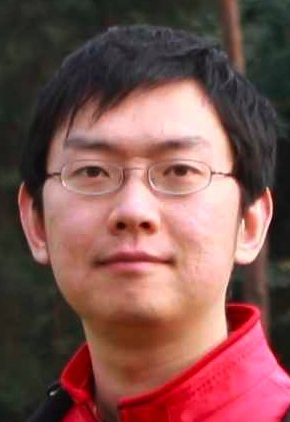

Postdoctoral research associate
University of Cambridge
yue.zhang (a) cl.cam.ac.uk
Biography
I have moved to SUTD.
I was a postdocoral researcher working on the FAUST project. My research interest includes machine translation, natural language parsing (in particular for the English and Chinese languages), and machine learning.
Before I came to Cambridge, I received my PhD degree from University of Oxford. I worked on statistical Chinese processing for my thesis. I received my MSc degree from University of Oxford, working on statistical machine translation from Chinese to English by parsing. MSc thesis. I received my undergrad degree on Computer Science from Tsinghua University, China.
Software
ZPar: statistical multi-language parser, with language-specific support for Chinese and English.
Publications
Yue Zhang, Graeme Blackwood and Stephen Clark. Syntax-Based Word Ordering Incorporating a Large-Scale Language Model. In proceedings of EACL 2012. Avignon, France. April. [PDF][BIB]Talks, tutorials and consultancy
2011. Stephen Clark and Yue Zhang. Surprisingly Efficient Parsing for a Wide-Coverage Lexicalised-Grammar Parser. Cambridge NLIP seminar.
2010. Invited talk to Uppsala University on dependency parsing.
2010. Qin Iris Wang and Yue Zhang. Recent Advances in Dependency Parsing. A tutorial for the NAACL conference. [PDF]
2009. Invited talk to the NLIP seminar, University of Cambridge on dependency parsing.
2008. Invited talk to the School of Informatics (ICCS), University of Edinburgh on dependency parsing.
2008. Consultancy for Sharp Research Europe Ltd. on word segmentation.
Teaching
2011. Supervisor of undergraduate students on C/C++ Programming (University of Cambridge).
2011. Practical demonstrator for Statistical Machine Translation (University of Cambridge).
2010-11. M.Phil project supervisor (University of Cambridge).
2010-11. Undergraduate project supervisor (University of Cambridge).
2010-11. Supervisor of undergraduate students on Natural Language Processing (University of Cambridge).
2008. Class tutor for the Advanced Topics in Natural Language Processing class (University of Oxford).
2006 and 07. Teaching assistant for the Introduction to Specification class (University of Oxford).
Research visits
2010. Research visit to Uppsala University (Joakim Nivre).
2009. Participant of the Johns Hopkins Summer Workshop (parsing the web).
Professional services
Reviewer, Journal of Logic and Computation, 2012.
Reviewer, Transactions on Asian Language Information Processing, 2011.
Reviewer, Knowledge and Information Systems, 2010, 11.
Reviewer, Computational Speech and Language, 2010.
Reviewer, Computational Linguistics, 2010, 11, 12.
Reviewer, Computational Intelligence, 2010.
Reviewer, the International Journal of Artificial Intelligence, 2009.
Reviewer, PC member, AAAI conference, 2012.
Program Committee, IJCNLP conference, 2011.
Program Committee, IWPT conference, 2011.
Program Committee, ADIM workshop, 2011.
Reviewer, PC member, EACL conference, 2012.
Reviewer, PC member, NAACL conference, 2010, 12.
Reviewer, EMNLP conference, 2009, 10, 12 (Best Reviewer Award).
Reviewer, PC member, ACL conference, 2008, 09, 12.
Reviewer, PC member, ACL student research workshop, 2012.
Reviewer and session chair, CLUK colloquium, 2008.